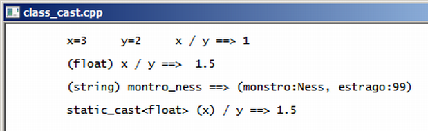

Curso completo de linguagem C++
Gameprog - Escola de programação de jogos digitais
Contato: gameprog.br@gmail.com
track16.html
16. Type-Casting de classes
16.1 Visão geral
Normalmente o type-casting é usado para promover a conversão explícita entre
tipos de dados, geralmente para assegurar a precisão na saida de um resultado.
Uma situação básica aonde você precisa usar um type-casting é na divisão
de números inteiros para garantir a precisão no resultado:
int x = 3;
int y = 2;
float z = 0.0f;
z = x / y; // Produz resultado indesejável: z = 1
z = (float) x / y; // Produz resultado preciso: z = 1.5
Existe uma outra forma de casting típica do c++, podemos escrever esta
linha z = (float) x / y desta forma: z = static_cast<float> (x) / y;
Tal como você faz com operadores em c++, você pode redefinir o significado de
um type-casting. Por exemplo, você pode transformar um objeto monstro numa
string e assim retornar uma string contendo uma lista para a exibição das
propriedades de um objeto monstro. Em uma situação mais necessária você
pode transformar um objeto Ponto em uma array de floats.
Agora veja nosso programa:

// class_cast.cpp
// esse programa ilustra o type casting de uma classe
#include <iostream>
#include <string>
using namespace std;
// protótipo das funções básicas
void inicio();
void fim();
// declaração da classe monstro
class Monstro {
public:
int m_estrago;
string m_nome;
Monstro(string snome = "monstro", int estrago = 10)
{
m_estrago = estrago;
m_nome = snome;
} // fim do construtor
operator string()
{
char txt[255];
sprintf (txt, "(monstro:%s, estrago:%d)", m_nome.c_str(), m_estrago);
string stemp = txt;
return stemp;
} // fim do casting para string
}; // fim da classe monstro
// início da função principal
int main() {
inicio();
int x = 3; int y = 2; float z = 0.0f;
Monstro montro_ness("Ness",99);
string info_monstro;
string res_impreciso = "\t x=3 \t y=2 \t x / y ==> ";
string res_preciso = "\t (float) x / y ==> ";
string res_cast_monstro = "\t (string) montro_ness ==> ";
string cast_exotico = "\t static_cast<float> (x) / y ==> ";
z = x / y; cout << res_impreciso << z << "\n\n";
z = (float) x / y; cout << res_preciso << z << "\n\n";
info_monstro = (string) montro_ness;
cout << res_cast_monstro << info_monstro << "\n\n";
z = static_cast<float> (x) / y;
cout << cast_exotico << z << "\n\n";
fim();
} // endmain
// implementação das funções básicas
void inicio() {
system("color f0"); system ("title class_cast.cpp");
cout << "\n";
} // endfunction
void fim() {
cout << endl; system("pause");
} // endfunction
Implementando o método que realiza o casting
operator string() {
char txt[255];
sprintf (txt, "(monstro:%s, estrago:%d)", m_nome.c_str(), m_estrago);
string stemp = txt;
return stemp; } // fim do casting para string
O método que realiza o casting é implementado na forma exemplificada no
código acima: operator tipo() { // bloco de código }
Depois no bloco de código você manipula os membros e no final apresenta um
retorno condizente com o casting solicitado.
sprintf (txt, "(monstro:%s, estrago:%d)", m_nome.c_str(), m_estrago);
Usamos a função sprintf() para imprimir as propriedades do objeto monstro
numa c-string. Note que m_nome não é um tipo string mas sim um objeto da classe
string e assim utilizamos o método c_str() desse objeto para retornar a c-string
que esse objeto string representa.
info_monstro = (string) montro_ness;
Depois que o método foi definido, o casting é feito normalmente no estilo da
linguagem c.